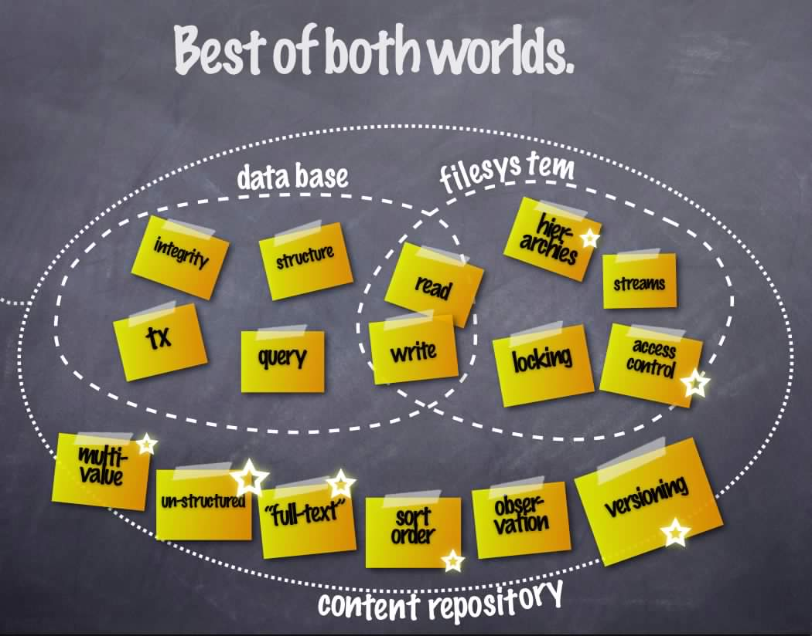

Qu'est-ce que c'est PHPCR?
C'est:
- Collection des interfaces:
- NodeIntreface
- SessionInterface
- WorkspaceInterface
- WorkspaceManagerInterface
- VersionManagerInterface
- etc
Qui permet de:
- Stocker les contenu (nodes) dans une arbre
- Faire du versioning
- Structured et unstructured content
- Avoir plusieurs "workspaces"
- Faire les references entre les nodes
- Import
- Export
- Full text search
- Bien plus ...
Mieuller des deux mondes...

PHPCR
Une implementation PHP
- Premier commit Feb 04 2008
- C'est largement une implementation exacte
- Mais il y a des changements qui etait fait (vois que Java est "strongly typed")
- Voilà, ce n'est pas grande chose -- c'est que une librarie des interfaces
THE END
Questions?
err, bad joke. on va continuer..
Implementation
Oui, c'est singular..,
Jackalope
- Librarie PHP (naturellement)
- C'est une couche qui permet de implementer facilement les "transports"
- Parce qu'il pris en charge les taches commun
- Il y a une transporte pour le reference implementation, Apache Jackrabbit
- et aussi une transporte pour doctrine-dbal
Mais on peux revé ...
WIP et speculations
- Faire une implementation qui utilise git!
- WIP pour MongoDB
- WIP pour midgard2
- Mais ils ne sont pas encore maintainer
- On a besoin des implementors!!
Nodes and Properties
$node = new \PHPCR\NodeInterface;
$node->setName('foobar');
$rootNode = $session->getNode('/');
$node->setParent($parent);
$session->save(); // flush the session
Workspaces
- Avoir plusieurs espaces du travail en parallel
- C'est une peu comme le concepte du branches en GIT
- Use case: envinronments de staging et production
- Faire les changements sur le backoffice
- Les changements sont fait sur le workspace "staging"
- Quand les changements sont prêt, faire "publisher" vers le workspace "production"
Node Types
- Structured et unstructured nodes
- Constraints: Analagous au le schema du table en MySQL
- Behavior: Definier comment agir le node
Une "domain specific language" (DSL) pour le deifinition de node types
Quelques node types de defaut
nt:base
Le node du minimum
[nt:base]
- jcr:primaryType (NAME) autocreated mandatory protected COMPUTE
- jcr:mixinTypes (NAME) autocreated mandatory protected multiple COMPUTE
nt:unstructured
Le node du maximum
[nt:unstructured] orderable
- * (UNDEFINED)
- * (UNDEFINED) multiple
+ * = nt:unstructured multiple VERSION
nt:version
Le node du version
[nt:resource] > mix:referenceable
- jcr:encoding (STRING)
- jcr:mimeType (STRING) mandatory
- jcr:data (BINARY) mandatory primary
- jcr:lastModified (DATE) mandatory IGNORE
nt:resource
Pour stocker les binaires avec le metadata ..
[nt:resource] > mix:referenceable
- jcr:encoding (STRING)
- jcr:mimeType (STRING) mandatory
- jcr:data (BINARY) mandatory primary
- jcr:lastModified (DATE) mandatory IGNORE